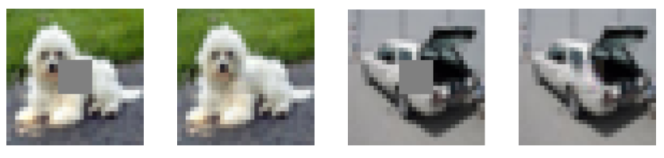
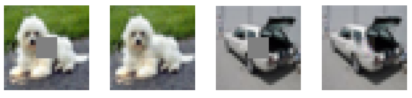

Autoencoder architecture of our model and Row Flattened LSTM Architecture
Abstract
Our paper presents some creative advancements in the image in-painting techniques for small, simple images for example from the CIFAR10 dataset. This study primarily targeted on improving the performance of the context encoders through the utilization of several major training methods on Generative Adversarial Networks (GANs). To achieve this, we upscaled the network Wasserstein GAN (WGAN) and compared the discriminators and encoders with the current state-of-the-art models, alongside standard Convolutional Neural Network (CNN) architectures. Side by side to this, we also explored methods of Latent Variable Models and developed several different models, namely Pixel CNN, Row Long Short Term Memory (LSTM), and Diagonal Bidirectional Long Short-Term Memory (BiLSTM). Moreover, we proposed a model based on the Pixel CNN architectures and developed a faster yet easy approach called Row-wise Flat Pixel LSTM. Our experiments demonstrate that the proposed models generate high-quality images on CIFAR10 while conforming the L2 loss and visual quality measurement.
Results
 

In the first two images, on the left is the ground truth example and on the right is a reconstructed image from our Row-wise Flat Pixel LSTM. In the third image, we present results from an out-of-sample example.
The Problem
In the field of computer vision, one challenge has consistently stood out due to its complexity and potential impact: image-inpainting. This technique is essential in restoring old photographs and repairing visual content, involves filling in missing or damaged portions of an image in a way that is seamless and unnoticeable. The goal is not just to cover the gaps but to understand the surrounding pixels' context and regenerate the lost part in harmony with the whole image. Traditional methods have halted in maintaining consistency in texture and color, often leaving noticeable mismatches that fail the alterations.
Innovating image restoration with deep learning
Our work was done to advance this process with the help of deep learning, bringing a subtle understanding of
images at a latent level. We also explored the area of Generative Adversarial Networks (GANs) and specifically
adapted the network to a Wasserstein GAN (WGAN) framework. This adaptation, coupled with strategic training
enhancements, reinforced our model's ability to handle the softness of image textures and colors. Also, our
exploration extended into density-based methods, where we experimented with Pixel CNN and various LSTM
configurations. A significant development was the introduction of a unique process we called Row-wise Flat Pixel
LSTM, simplifying the traditionally complex architectures. This new method was not just about streamlining but
also about enhancing the model's interpretability of the image data.
Future directions: beyond the frame!
While our results are promising, the field of innovation remains vast. Potential future explorations include
expanding the model's capabilities to handle more complex and higher-resolution images and videos, which are
essential for real-world applications. Furthermore, integrating more advanced GAN and Diffusion architectures or
using unsupervised learning methods could unlock even more sophisticated inpainting techniques. Another promising
area is exploring real-time inpainting for video content, a frontier not yet fully explored. This advancement
could revolutionize film restoration, live broadcasting, and even video editing by providing tools to repair
visual content on-the-fly.
Slides
BibTeX Citation
@article{
Jan_Noor_2024,
title={Beyond CNNs: Encoded Context for Image Inpainting with LSTMs and Pixel CNNs},
volume={6},
url={https://journal.50sea.com/index.php/IJIST/article/view/783},
number={5},
journal={International Journal of Innovations in Science & Technology},
author={Jan, Taneem Ullah and Noor, Ayesha},
year={2024},
month={May},
pages={165-179}
}